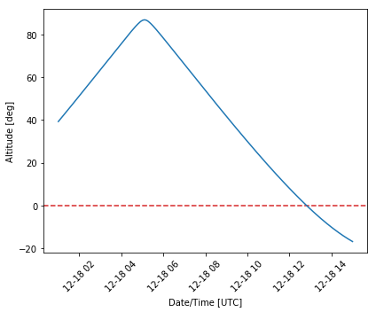
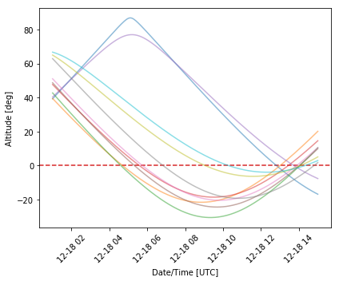

Introduce key concepts in astropy.coordinates: coordinate
component formats, representations, and frames
Demonstrate how to work with coordinate representations, for example, to change from Cartesian to Cylindrical coordinates
Introduce coordinate frame transformations and demonstrate transforming from ICRS coordinates to Galactic and Altitude-Azimuth coordinates
coordinates, OOP
In the previous tutorial in this series, we showed how astronomical
coordinates in the ICRS or equatorial coordinate system can be
represented in Python using the SkyCoord object
(docs).
There are many other coordinate systems that are commonly used in
astronomical research. For example, the Galactic coordinate system is
often used in radio astronomy and Galactic science, the “horizontal” or
altitude-azimuth frame is often used for observatory-specific
observation planning, and Ecliptic coordinates are often used for solar
system science or space mission footprints. All of these coordinate
frames (and others!) are supported by astropy.coordinates. As we
will see below, the SkyCoord object is designed to make transforming
between these systems a straightforward task.
In this tutorial, we will explore how the astropy.coordinates
package can be used to transform astronomical coordinates between
different coordinate systems or frames. You may find it helpful to keep
the Astropy documentation for the coordinates
package
open alongside this tutorial for reference or additional reading. In the
text below, you may also see some links that look like
(docs).
These links will take you to parts of the documentation that are
directly relevant to the cells from which they link.
Note: This is the 2nd tutorial in a series of tutorials about astropy.coordinates. If you are new to astropy.coordinates, you may want to start from the beginning or an earlier tutorial. - Previous tutorial: Astronomical Coordinates 1 - Getting Started - Next tutorial: Astronomical Coordinates 3 - Working with Velocity Data
We start by importing some general packages that we will need below:
In[1]:
import matplotlib as mpl
import matplotlib.pyplot as plt
%matplotlib inline
import numpy as np
from astropy import units as u
from astropy.coordinates import (SkyCoord, Distance, Galactic,
EarthLocation, AltAz)
import astropy.coordinates as coord
from astropy.io import fits
from astropy.table import QTable
from astropy.time import Time
from astropy.utils.data import download_file
astropy.coordinates Concepts: Component Formats, Representations, and Frames¶Usage of the term “coordinates” is overloaded in astronomy and is often
used interchangeably when referring to data formats (e.g., sexagesimal
vs. decimal), representations (e.g., Cartesian vs. spherical), and
frames (e.g., equatorial vs. galactic). In astropy.coordinates, we
have tried to formalize these three concepts and have made them a core
part of the way we interact with objects in this subpackage
(docs).
Here we will give an overview of these different concepts as we build up
to demonstrating how to transform between different astronomical
reference frames or systems.
In our previous tutorial, we showed that it is possible to pass in
coordinate component data to the SkyCoord initializer as strings or
as Quantity objects in a variety of formats and units. We also saw
that the coordinate components of SkyCoord objects can be
re-formatted. For example, we can change the coordinate format by
changing the component units, or converting the data to a string:
In[2]:
c = SkyCoord(ra=15.9932*u.deg, dec=-10.52351344*u.deg)
print(c.ra.hourangle)
print(c.to_string('hmsdms'))
print(c.dec.to_string(sep=':', precision=5))
Out[2]:
1.0662133333333335
01h03m58.368s -10d31m24.6484s
-10:31:24.64838
See the previous tutorial Astronomical Coordinates 1 - Getting Started for more examples of this.
In the previous tutorial, we only worked with coordinate data in
spherical representations (longitude/latitude), but
astropy.coordinates also supports other coordinate representations
like Cartesian, cylindrical, etc.
(docs).
To retrieve the coordinate data in a different representation, we can
use the SkyCoord.represent_as() method. This method either takes a
string name of the desired representation, for example:
In[3]:
c.represent_as('cartesian')
Out[3]:
<CartesianRepresentation (x, y, z) [dimensionless]
(0.94512547, 0.27088898, -0.18263903)>
or it accepts an astropy.coordinates Representation class, such
as:
In[4]:
c.represent_as(coord.CartesianRepresentation)
Out[4]:
<CartesianRepresentation (x, y, z) [dimensionless]
(0.94512547, 0.27088898, -0.18263903)>
A list of all supported representations is given in the documentation
(docs),
or can be identified as class names that end in Representaton:
In[5]:
print([x for x in dir(coord)
if x.endswith('Representation') and not x.startswith('Base')])
Out[5]:
['CartesianRepresentation', 'CylindricalRepresentation', 'PhysicsSphericalRepresentation', 'RadialRepresentation', 'SphericalRepresentation', 'UnitSphericalRepresentation']
In the SkyCoord object that we defined above, we only specified sky
positions (i.e., no distance data), so the units of the Cartesian
components that are returned above are dimensionless and are interpreted
as being on the surface of the (dimensionless) unit sphere. If we
instead pass in a distance to SkyCoord using the distance
keyword argument, we instead get a CartesianRepresentation object
for the 3D position with positional units. For example:
In[6]:
c2 = SkyCoord(ra=15.9932 * u.deg,
dec=-10.52351344 * u.deg,
distance=127.4 * u.pc)
In[7]:
c2.represent_as('cartesian')
Out[7]:
<CartesianRepresentation (x, y, z) in pc
(120.40898448, 34.5112558, -23.2682118)>
Or, we could represent this data with cylindrical components:
In[8]:
c2.represent_as('cylindrical')
Out[8]:
<CylindricalRepresentation (rho, phi, z) in (pc, rad, pc)
(125.2571368, 0.279134, -23.2682118)>
To summarize, using SkyCoord.represent_as() is a convenient way to
retrieve your coordinate data in a different representation, like
Cartesian or Cylindrical. You can also change (in place) the
representation of a SkyCoord object by setting the
SkyCoord.representation_type attribute. For example, if we create a
SkyCoord again with a distance, the default representation type is
spherical:
In[9]:
c3 = SkyCoord(ra=15.9932 * u.deg,
dec=-10.52351344 * u.deg,
distance=127.4 * u.pc)
print(c3.representation_type)
c3
Out[9]:
<class 'astropy.coordinates.representation.SphericalRepresentation'>
<SkyCoord (ICRS): (ra, dec, distance) in (deg, deg, pc)
(15.9932, -10.52351344, 127.4)>
We can, however, change the internal representation of the data by
setting the representation_type attribute to a new
Representation class:
In[10]:
c3.representation_type = coord.CylindricalRepresentation
This then changes the way SkyCoord will display the components:
In[11]:
c3
Out[11]:
<SkyCoord (ICRS): (rho, phi, z) in (pc, deg, pc)
(125.2571368, 15.9932, -23.2682118)>
Note, however, that changing the representation will also change the
components that are available on a given SkyCoord object: Once we
set the representation_type to cylindrical, the attributes .ra
and .dec will no longer work, and we instead have to use the
cylindrical component names to access the data. In this case, these are
.rho for radius, .phi for azimuth, .z for \(z\)
position:
In[12]:
c3.rho, c3.phi, c3.z
Out[12]:
(<Quantity 125.2571368 pc>, <Angle 15.9932 deg>, <Quantity -23.2682118 pc>)
The third key concept to keep in mind when thinking about astronomical
coordinate data is the reference frame or coordinate system that the
data are in. In the previous tutorial, and so far here, we have worked
with the default frame assumed by SkyCoord: the International
Celestial Reference System (ICRS; some important definitions and
context about the ICRS is given
here). The ICRS is the
fundamental coordinate system used in most modern astronomical contexts
and is generally what people mean when they refer to “equatorial” or
“J2000” or “RA/Dec” coordinates (but there are some important caveats if
you are working with older data). As noted above, however, there are
many other coordinate systems used in different astronomical, solar, or
solar system contexts.
Some other common coordinate systems are defined as a rotation away from
the ICRS that is defined to make science applications easier to
interpret. One example here is the Galactic coordinate system, which is
rotated with respect to the ICRS to approximately align the Galactic
plane with latitude=0. As an example of the astropy.coordinates
frame transformation machinery, we will load in a subset of a catalog of
positions and distances to a set of open clusters in the Milky Way from
Cantat-Gaudin et al. 2018 (Table 1 in this
catalog).
We have pre-selected the 474 clusters within 2 kpc of the sun and
provide the catalog as a data file next to this notebook. This catalog
provides sky position (columns RAJ2000 and DEJ2000 in the
original catalog) and distance estimates (column dmode in the
original catalog), which we have renamed in the table we provide to
column names 'ra', 'dec', and 'distance'. We will start by
loading the catalog as a QTable using astropy.table
(docs):
In[13]:
tbl = QTable.read('Cantat-Gaudin-open-clusters.ecsv')
We can now pass the coordinate components to SkyCoord to create a
single array-valued SkyCoord object to represent the positions of
all of the open clusters in this catalog. Note that below we will
explicitly specify the coordinate frame using frame='icrs': Even
though this is the default frame, it is often better to be explicit so
that it is clearer to someone reading the code what the coordinate
system is:
In[14]:
open_cluster_c = SkyCoord(
ra=tbl['ra'],
dec=tbl['dec'],
distance=tbl['distance'],
frame='icrs')
len(open_cluster_c)
Out[14]:
474
To see the first few coordinate entries, we can “slice” the array-valued coordinate object like we would a Python list or numpy array:
In[15]:
open_cluster_c[:4]
Out[15]:
<SkyCoord (ICRS): (ra, dec, distance) in (deg, deg, pc)
[( 51.87 , 34.981, 629.6), (288.399, 36.369, 382.2),
(295.548, 27.366, 522.9), (298.306, 39.349, 1034.6)]>
Let’s now visualize the sky positions of all of these clusters, colored
by their distances. To plot these in an all-sky spherical projection
(e.g., aitoff) using matplotlib, with longitude increasing to the
left as is typically done for plotting astronomical objects on the sky,
we have to trick matplotlib a little bit: We have to pass in the
negative angle values when plotting, then reformat the tick labels to
make them positive values again. We have written a short function below
to handle this trick:
In[16]:
def coordinates_aitoff_plot(coords):
fig, ax = plt.subplots(figsize=(10, 4),
subplot_kw=dict(projection="aitoff"))
sph = coords.spherical
cs = ax.scatter(-sph.lon.wrap_at(180*u.deg).radian,
sph.lat.radian,
c=sph.distance.value)
def fmt_func(x, pos):
val = coord.Angle(-x*u.radian).wrap_at(360*u.deg).degree
return f'${val:.0f}' + r'^{\circ}$'
ticker = mpl.ticker.FuncFormatter(fmt_func)
ax.xaxis.set_major_formatter(ticker)
ax.grid()
cb = fig.colorbar(cs)
cb.set_label('distance [pc]')
return fig, ax
Now we can plot the sky positions by passing our SkyCoord object in
to this coordinates_aitoff_plot() plot helper function:
In[17]:
fig, ax = coordinates_aitoff_plot(open_cluster_c)
ax.set_xlabel('RA [deg]')
ax.set_ylabel('Dec [deg]')
Out[17]:
Text(0, 0.5, 'Dec [deg]')
The majority of these open clusters are relatively close to the Galactic midplane, which is why they form a fairly narrow “band” on the sky in ICRS coordinates. If we transform these positions to Galactic coordinates, we would therefore expect the points to appear around the latitude \(b=0\) line.
To transform our coordinates from ICRS to Galactic (or any other
coordinate system), we can use the SkyCoord.transform_to() method
and pass in the new coordinate frame instance (in this case,
Galactic()):
In[18]:
open_cluster_gal = open_cluster_c.transform_to(Galactic())
While the recommended way of transforming SkyCoord objects to new
frames is by passing in a frame class instance as we demonstrated in
the cell above, SkyCoord also supports a shorthand for transforming
some frames by accessing attributes (named as the lower-case version of
the new frame name):
In[19]:
open_cluster_gal = open_cluster_c.galactic
The transformed SkyCoord object now contains coordinate data in the
Galactic coordinate frame:
In[20]:
open_cluster_gal[:4]
Out[20]:
<SkyCoord (Galactic): (l, b, distance) in (deg, deg, pc)
[(155.72353157, -17.76999215, 629.59997559),
( 68.02807936, 11.60790067, 382.20001221),
( 62.82445527, 2.06275608, 522.90002441),
( 74.37841053, 6.07393592, 1034.59997559)]>
Comparing this to the original SkyCoord, note that the names of the
longitude and latitude components have changed from ra to l and
from dec to b, per convention. We can therefore access the new
Galactic longitude/latitude data using these new attribute names:
In[21]:
open_cluster_gal.l[:3]
Out[21]:
In[22]:
open_cluster_gal.b[:3]
Out[22]:
Note: the ICRS coordinate component names (``.ra``, ``.dec``) will thereforenotwork on this new, transformed ``SkyCoord`` instance, ``open_cluster_gal``
With this new SkyCoord object (in the Galactic frame), let’s re-make
a sky plot to visualize the sky positions of the open clusters in
Galactic coordinates:
In[23]:
fig, ax = coordinates_aitoff_plot(open_cluster_gal);
ax.set_xlabel('Galactic longitude, $l$ [deg]')
ax.set_ylabel('Galactic latitude, $b$ [deg]')
Out[23]:
Text(0, 0.5, 'Galactic latitude, $b$ [deg]')
As we hoped and expected, in the Galactic coordinate frame, the open clusters predominantly appear at low galactic latitudes!
To determine whether a target is observable from a given observatory on
Earth or to find out what targets are observable from a city or place on
Earth at some time, we sometimes need to convert a coordinate or set of
coordinates to a frame that is local to an on-earth observer. The most
common choice for such a frame is “horizontal” or “Altitude-Azimuth”
coordinates. In this frame, the sky coordinates of a source can be
specified as an altitude from the horizon and an azimuth angle at a
specified time. This coordinate frame is supported in
astropy.coordinates through the AltAz coordinate frame.
The AltAz frame is different from the previously-demonstrated
Galactic frame in that it requires additional metadata to define the
frame instance. Since the Galactic frame is close to being a 3D
rotation away from the ICRS frame, and that rotation matrix is fixed, we
could transform to Galactic by instantiating the class with no
arguments (see the example above where we used
.transform_to(Galactic())). In order to specify an instance of the
AltAz frame, we have to (at minimum) pass in (1) a location on
Earth, and (2) the time (or times) we are requesting the frame at.
In astropy.coordinates, we specify locations on Earth with the
EarthLocation class
(docs).
If we know the Earth longitude and latitude of our site, we can use
these to create an instance of EarthLocation directly:
In[24]:
demo_loc = EarthLocation.from_geodetic(
lon=-74.32834*u.deg, lat=43.05885*u.deg)
The EarthLocation class also provides handy short-hands for
retrieving an instance for a given street address (by querying the
OpenStreetMap web API):
In[25]:
demo_loc = EarthLocation.of_address('162 Fifth Ave, New York, NY 10010')
Or for an astronomical observatory (use
EarthLocation.get_site_names() to see a list of all available
sites). For example, to retrieve an EarthLocation instance for the
position of Kitt Peak National Observatory (in AZ, USA):
In[26]:
observing_location = EarthLocation.of_site('Kitt Peak')
We will use Kitt Peak as our site.
As an example, we will now compute the altitude of a few of the open
clusters from our catalog above over the course of a night. We have an
object to represent our location on Earth, so now we need to create a
set of times to compute the AltAz frame for. AltAz expects time
information to be passed in as an astropy.time.Time object
(docs;
which can contain an array of times). Let’s pretend we have an observing
run coming up on Dec 18, 2020, and we would like to compute the
altitude/azimuth coordinates for our open clusters over that whole
night.
In[27]:
# 1AM UTC = 6PM local time (AZ mountain time), roughly the start of a night
observing_date = Time('2020-12-18 1:00')
# Compute the alt/az over a 14 hour period, starting at 6PM local time,
# with 256 equally spaced time points:
time_grid = observing_date + np.linspace(0, 14, 256) * u.hour
Now we use our location, observing_location, and this grid of times,
time_grid, to create an AltAz frame object.
Note: This frame accepts even more parameters about the atmosphere, which can be used to correct for atmospheric refraction. But here we leave those additional parameters set to their defaults, which ignores refraction.
In[28]:
altaz = AltAz(location=observing_location, obstime=time_grid)
Now we can transform the ICRS SkyCoord positions of the open
clusters to AltAz to get the location of each of the clusters in the
sky over Kitt Peak over a night. Let’s first do this only for the first
open cluster in the catalog we loaded:
In[29]:
oc_altaz = open_cluster_c[0].transform_to(altaz)
oc_altaz
Out[29]:
<SkyCoord (AltAz: obstime=['2020-12-18 01:00:00.000' '2020-12-18 01:03:17.647'
'2020-12-18 01:06:35.294' '2020-12-18 01:09:52.941'
'2020-12-18 01:13:10.588' '2020-12-18 01:16:28.235'
'2020-12-18 01:19:45.882' '2020-12-18 01:23:03.529'
'2020-12-18 01:26:21.176' '2020-12-18 01:29:38.824'
'2020-12-18 01:32:56.471' '2020-12-18 01:36:14.118'
'2020-12-18 01:39:31.765' '2020-12-18 01:42:49.412'
'2020-12-18 01:46:07.059' '2020-12-18 01:49:24.706'
'2020-12-18 01:52:42.353' '2020-12-18 01:56:00.000'
'2020-12-18 01:59:17.647' '2020-12-18 02:02:35.294'
'2020-12-18 02:05:52.941' '2020-12-18 02:09:10.588'
'2020-12-18 02:12:28.235' '2020-12-18 02:15:45.882'
'2020-12-18 02:19:03.529' '2020-12-18 02:22:21.176'
'2020-12-18 02:25:38.824' '2020-12-18 02:28:56.471'
'2020-12-18 02:32:14.118' '2020-12-18 02:35:31.765'
'2020-12-18 02:38:49.412' '2020-12-18 02:42:07.059'
'2020-12-18 02:45:24.706' '2020-12-18 02:48:42.353'
'2020-12-18 02:52:00.000' '2020-12-18 02:55:17.647'
'2020-12-18 02:58:35.294' '2020-12-18 03:01:52.941'
'2020-12-18 03:05:10.588' '2020-12-18 03:08:28.235'
'2020-12-18 03:11:45.882' '2020-12-18 03:15:03.529'
'2020-12-18 03:18:21.176' '2020-12-18 03:21:38.824'
'2020-12-18 03:24:56.471' '2020-12-18 03:28:14.118'
'2020-12-18 03:31:31.765' '2020-12-18 03:34:49.412'
'2020-12-18 03:38:07.059' '2020-12-18 03:41:24.706'
'2020-12-18 03:44:42.353' '2020-12-18 03:48:00.000'
'2020-12-18 03:51:17.647' '2020-12-18 03:54:35.294'
'2020-12-18 03:57:52.941' '2020-12-18 04:01:10.588'
'2020-12-18 04:04:28.235' '2020-12-18 04:07:45.882'
'2020-12-18 04:11:03.529' '2020-12-18 04:14:21.176'
'2020-12-18 04:17:38.824' '2020-12-18 04:20:56.471'
'2020-12-18 04:24:14.118' '2020-12-18 04:27:31.765'
'2020-12-18 04:30:49.412' '2020-12-18 04:34:07.059'
'2020-12-18 04:37:24.706' '2020-12-18 04:40:42.353'
'2020-12-18 04:44:00.000' '2020-12-18 04:47:17.647'
'2020-12-18 04:50:35.294' '2020-12-18 04:53:52.941'
'2020-12-18 04:57:10.588' '2020-12-18 05:00:28.235'
'2020-12-18 05:03:45.882' '2020-12-18 05:07:03.529'
'2020-12-18 05:10:21.176' '2020-12-18 05:13:38.824'
'2020-12-18 05:16:56.471' '2020-12-18 05:20:14.118'
'2020-12-18 05:23:31.765' '2020-12-18 05:26:49.412'
'2020-12-18 05:30:07.059' '2020-12-18 05:33:24.706'
'2020-12-18 05:36:42.353' '2020-12-18 05:40:00.000'
'2020-12-18 05:43:17.647' '2020-12-18 05:46:35.294'
'2020-12-18 05:49:52.941' '2020-12-18 05:53:10.588'
'2020-12-18 05:56:28.235' '2020-12-18 05:59:45.882'
'2020-12-18 06:03:03.529' '2020-12-18 06:06:21.176'
'2020-12-18 06:09:38.824' '2020-12-18 06:12:56.471'
'2020-12-18 06:16:14.118' '2020-12-18 06:19:31.765'
'2020-12-18 06:22:49.412' '2020-12-18 06:26:07.059'
'2020-12-18 06:29:24.706' '2020-12-18 06:32:42.353'
'2020-12-18 06:36:00.000' '2020-12-18 06:39:17.647'
'2020-12-18 06:42:35.294' '2020-12-18 06:45:52.941'
'2020-12-18 06:49:10.588' '2020-12-18 06:52:28.235'
'2020-12-18 06:55:45.882' '2020-12-18 06:59:03.529'
'2020-12-18 07:02:21.176' '2020-12-18 07:05:38.824'
'2020-12-18 07:08:56.471' '2020-12-18 07:12:14.118'
'2020-12-18 07:15:31.765' '2020-12-18 07:18:49.412'
'2020-12-18 07:22:07.059' '2020-12-18 07:25:24.706'
'2020-12-18 07:28:42.353' '2020-12-18 07:32:00.000'
'2020-12-18 07:35:17.647' '2020-12-18 07:38:35.294'
'2020-12-18 07:41:52.941' '2020-12-18 07:45:10.588'
'2020-12-18 07:48:28.235' '2020-12-18 07:51:45.882'
'2020-12-18 07:55:03.529' '2020-12-18 07:58:21.176'
'2020-12-18 08:01:38.824' '2020-12-18 08:04:56.471'
'2020-12-18 08:08:14.118' '2020-12-18 08:11:31.765'
'2020-12-18 08:14:49.412' '2020-12-18 08:18:07.059'
'2020-12-18 08:21:24.706' '2020-12-18 08:24:42.353'
'2020-12-18 08:28:00.000' '2020-12-18 08:31:17.647'
'2020-12-18 08:34:35.294' '2020-12-18 08:37:52.941'
'2020-12-18 08:41:10.588' '2020-12-18 08:44:28.235'
'2020-12-18 08:47:45.882' '2020-12-18 08:51:03.529'
'2020-12-18 08:54:21.176' '2020-12-18 08:57:38.824'
'2020-12-18 09:00:56.471' '2020-12-18 09:04:14.118'
'2020-12-18 09:07:31.765' '2020-12-18 09:10:49.412'
'2020-12-18 09:14:07.059' '2020-12-18 09:17:24.706'
'2020-12-18 09:20:42.353' '2020-12-18 09:24:00.000'
'2020-12-18 09:27:17.647' '2020-12-18 09:30:35.294'
'2020-12-18 09:33:52.941' '2020-12-18 09:37:10.588'
'2020-12-18 09:40:28.235' '2020-12-18 09:43:45.882'
'2020-12-18 09:47:03.529' '2020-12-18 09:50:21.176'
'2020-12-18 09:53:38.824' '2020-12-18 09:56:56.471'
'2020-12-18 10:00:14.118' '2020-12-18 10:03:31.765'
'2020-12-18 10:06:49.412' '2020-12-18 10:10:07.059'
'2020-12-18 10:13:24.706' '2020-12-18 10:16:42.353'
'2020-12-18 10:20:00.000' '2020-12-18 10:23:17.647'
'2020-12-18 10:26:35.294' '2020-12-18 10:29:52.941'
'2020-12-18 10:33:10.588' '2020-12-18 10:36:28.235'
'2020-12-18 10:39:45.882' '2020-12-18 10:43:03.529'
'2020-12-18 10:46:21.176' '2020-12-18 10:49:38.824'
'2020-12-18 10:52:56.471' '2020-12-18 10:56:14.118'
'2020-12-18 10:59:31.765' '2020-12-18 11:02:49.412'
'2020-12-18 11:06:07.059' '2020-12-18 11:09:24.706'
'2020-12-18 11:12:42.353' '2020-12-18 11:16:00.000'
'2020-12-18 11:19:17.647' '2020-12-18 11:22:35.294'
'2020-12-18 11:25:52.941' '2020-12-18 11:29:10.588'
'2020-12-18 11:32:28.235' '2020-12-18 11:35:45.882'
'2020-12-18 11:39:03.529' '2020-12-18 11:42:21.176'
'2020-12-18 11:45:38.824' '2020-12-18 11:48:56.471'
'2020-12-18 11:52:14.118' '2020-12-18 11:55:31.765'
'2020-12-18 11:58:49.412' '2020-12-18 12:02:07.059'
'2020-12-18 12:05:24.706' '2020-12-18 12:08:42.353'
'2020-12-18 12:12:00.000' '2020-12-18 12:15:17.647'
'2020-12-18 12:18:35.294' '2020-12-18 12:21:52.941'
'2020-12-18 12:25:10.588' '2020-12-18 12:28:28.235'
'2020-12-18 12:31:45.882' '2020-12-18 12:35:03.529'
'2020-12-18 12:38:21.176' '2020-12-18 12:41:38.824'
'2020-12-18 12:44:56.471' '2020-12-18 12:48:14.118'
'2020-12-18 12:51:31.765' '2020-12-18 12:54:49.412'
'2020-12-18 12:58:07.059' '2020-12-18 13:01:24.706'
'2020-12-18 13:04:42.353' '2020-12-18 13:08:00.000'
'2020-12-18 13:11:17.647' '2020-12-18 13:14:35.294'
'2020-12-18 13:17:52.941' '2020-12-18 13:21:10.588'
'2020-12-18 13:24:28.235' '2020-12-18 13:27:45.882'
'2020-12-18 13:31:03.529' '2020-12-18 13:34:21.176'
'2020-12-18 13:37:38.824' '2020-12-18 13:40:56.471'
'2020-12-18 13:44:14.118' '2020-12-18 13:47:31.765'
'2020-12-18 13:50:49.412' '2020-12-18 13:54:07.059'
'2020-12-18 13:57:24.706' '2020-12-18 14:00:42.353'
'2020-12-18 14:04:00.000' '2020-12-18 14:07:17.647'
'2020-12-18 14:10:35.294' '2020-12-18 14:13:52.941'
'2020-12-18 14:17:10.588' '2020-12-18 14:20:28.235'
'2020-12-18 14:23:45.882' '2020-12-18 14:27:03.529'
'2020-12-18 14:30:21.176' '2020-12-18 14:33:38.824'
'2020-12-18 14:36:56.471' '2020-12-18 14:40:14.118'
'2020-12-18 14:43:31.765' '2020-12-18 14:46:49.412'
'2020-12-18 14:50:07.059' '2020-12-18 14:53:24.706'
'2020-12-18 14:56:42.353' '2020-12-18 15:00:00.000'], location=(-1994502.60430614, -5037538.54232911, 3358104.99690298) m, pressure=0.0 hPa, temperature=0.0 deg_C, relative_humidity=0.0, obswl=1.0 micron): (az, alt, distance) in (deg, deg, m)
[( 68.64531195, 3.92957976e+01, 1.94274252e+19),
( 68.87232256, 3.99487861e+01, 1.94274252e+19),
( 69.09658773, 4.06027691e+01, 1.94274252e+19),
( 69.31808174, 4.12577245e+01, 1.94274252e+19),
( 69.53677552, 4.19136304e+01, 1.94274252e+19),
( 69.75263652, 4.25704651e+01, 1.94274252e+19),
( 69.96562846, 4.32282074e+01, 1.94274252e+19),
( 70.17571107, 4.38868357e+01, 1.94274252e+19),
( 70.38283984, 4.45463292e+01, 1.94274252e+19),
( 70.58696572, 4.52066669e+01, 1.94274252e+19),
( 70.78803479, 4.58678280e+01, 1.94274252e+19),
( 70.98598794, 4.65297919e+01, 1.94274252e+19),
( 71.18076044, 4.71925382e+01, 1.94274252e+19),
( 71.37228158, 4.78560463e+01, 1.94274252e+19),
( 71.56047414, 4.85202961e+01, 1.94274252e+19),
( 71.74525393, 4.91852671e+01, 1.94274252e+19),
( 71.92652921, 4.98509393e+01, 1.94274252e+19),
( 72.10420006, 5.05172924e+01, 1.94274252e+19),
( 72.27815772, 5.11843061e+01, 1.94274252e+19),
( 72.44828383, 5.18519603e+01, 1.94274252e+19),
( 72.61444956, 5.25202345e+01, 1.94274252e+19),
( 72.77651469, 5.31891085e+01, 1.94274252e+19),
( 72.93432662, 5.38585616e+01, 1.94274252e+19),
( 73.08771912, 5.45285732e+01, 1.94274252e+19),
( 73.23651113, 5.51991223e+01, 1.94274252e+19),
( 73.38050525, 5.58701878e+01, 1.94274252e+19),
( 73.51948615, 5.65417482e+01, 1.94274252e+19),
( 73.65321874, 5.72137818e+01, 1.94274252e+19),
( 73.78144611, 5.78862662e+01, 1.94274252e+19),
( 73.90388723, 5.85591788e+01, 1.94274252e+19),
( 74.02023431, 5.92324963e+01, 1.94274252e+19),
( 74.13014985, 5.99061948e+01, 1.94274252e+19),
( 74.23326323, 6.05802495e+01, 1.94274252e+19),
( 74.32916689, 6.12546351e+01, 1.94274252e+19),
( 74.41741188, 6.19293249e+01, 1.94274252e+19),
( 74.49750284, 6.26042914e+01, 1.94274252e+19),
( 74.56889213, 6.32795056e+01, 1.94274252e+19),
( 74.63097317, 6.39549371e+01, 1.94274252e+19),
( 74.68307262, 6.46305539e+01, 1.94274252e+19),
( 74.72444134, 6.53063219e+01, 1.94274252e+19),
( 74.75424384, 6.59822048e+01, 1.94274252e+19),
( 74.77154591, 6.66581637e+01, 1.94274252e+19),
( 74.7753001 , 6.73341567e+01, 1.94274252e+19),
( 74.76432852, 6.80101385e+01, 1.94274252e+19),
( 74.73730248, 6.86860596e+01, 1.94274252e+19),
( 74.69271818, 6.93618659e+01, 1.94274252e+19),
( 74.62886761, 7.00374976e+01, 1.94274252e+19),
( 74.54380349, 7.07128884e+01, 1.94274252e+19),
( 74.43529677, 7.13879644e+01, 1.94274252e+19),
( 74.30078485, 7.20626423e+01, 1.94274252e+19),
( 74.13730816, 7.27368280e+01, 1.94274252e+19),
( 73.94143174, 7.34104138e+01, 1.94274252e+19),
( 73.70914787, 7.40832764e+01, 1.94274252e+19),
( 73.43575409, 7.47552727e+01, 1.94274252e+19),
( 73.11569924, 7.54262356e+01, 1.94274252e+19),
( 72.74238752, 7.60959686e+01, 1.94274252e+19),
( 72.30792686, 7.67642378e+01, 1.94274252e+19),
( 71.80280292, 7.74307629e+01, 1.94274252e+19),
( 71.2154524 , 7.80952039e+01, 1.94274252e+19),
( 70.53169906, 7.87571446e+01, 1.94274252e+19),
( 69.73400027, 7.94160691e+01, 1.94274252e+19),
( 68.80042988, 8.00713302e+01, 1.94274252e+19),
( 67.70329059, 8.07221051e+01, 1.94274252e+19),
( 66.40720237, 8.13673326e+01, 1.94274252e+19),
( 64.86644797, 8.20056232e+01, 1.94274252e+19),
( 63.02126974, 8.26351269e+01, 1.94274252e+19),
( 60.79271465, 8.32533379e+01, 1.94274252e+19),
( 58.07556828, 8.38568008e+01, 1.94274252e+19),
( 54.72908241, 8.44406661e+01, 1.94274252e+19),
( 50.56610671, 8.49980229e+01, 1.94274252e+19),
( 45.34423733, 8.55189271e+01, 1.94274252e+19),
( 38.77061796, 8.59891117e+01, 1.94274252e+19),
( 30.5487625 , 8.63886759e+01, 1.94274252e+19),
( 20.51469271, 8.66919014e+01, 1.94274252e+19),
( 8.87921676, 8.68706354e+01, 1.94274252e+19),
(356.42130394, 8.69032349e+01, 1.94274252e+19),
(344.30564506, 8.67852493e+01, 1.94274252e+19),
(333.52846484, 8.65320207e+01, 1.94274252e+19),
(324.53491308, 8.61702974e+01, 1.94274252e+19),
(317.28825209, 8.57275676e+01, 1.94274252e+19),
(311.52521777, 8.52263406e+01, 1.94274252e+19),
(306.94165668, 8.46831617e+01, 1.94274252e+19),
(303.27141327, 8.41096547e+01, 1.94274252e+19),
(300.30436084, 8.35138910e+01, 1.94274252e+19),
(297.88122585, 8.29015054e+01, 1.94274252e+19),
(295.88283322, 8.22764848e+01, 1.94274252e+19),
(294.21997197, 8.16416987e+01, 1.94274252e+19),
(292.82539391, 8.09992491e+01, 1.94274252e+19),
(291.6478951 , 8.03507037e+01, 1.94274252e+19),
(290.64804543, 7.96972512e+01, 1.94274252e+19),
(289.79512802, 7.90398074e+01, 1.94274252e+19),
(289.06494086, 7.83790884e+01, 1.94274252e+19),
(288.4382068 , 7.77156619e+01, 1.94274252e+19),
(287.89941318, 7.70499836e+01, 1.94274252e+19),
(287.43595607, 7.63824237e+01, 1.94274252e+19),
(287.03750269, 7.57132863e+01, 1.94274252e+19),
(286.69551114, 7.50428237e+01, 1.94274252e+19),
(286.40286499, 7.43712476e+01, 1.94274252e+19),
(286.15359244, 7.36987369e+01, 1.94274252e+19),
(285.94264852, 7.30254443e+01, 1.94274252e+19),
(285.76574452, 7.23515011e+01, 1.94274252e+19),
(285.61921334, 7.16770213e+01, 1.94274252e+19),
(285.49990234, 7.10021045e+01, 1.94274252e+19),
(285.40508746, 7.03268384e+01, 1.94274252e+19),
(285.3324037 , 6.96513008e+01, 1.94274252e+19),
(285.27978879, 6.89755611e+01, 1.94274252e+19),
(285.24543691, 6.82996817e+01, 1.94274252e+19),
(285.22776065, 6.76237189e+01, 1.94274252e+19),
(285.22535957, 6.69477243e+01, 1.94274252e+19),
(285.23699386, 6.62717449e+01, 1.94274252e+19),
(285.26156249, 6.55958238e+01, 1.94274252e+19),
(285.29808465, 6.49200014e+01, 1.94274252e+19),
(285.3456842 , 6.42443149e+01, 1.94274252e+19),
(285.40357639, 6.35687992e+01, 1.94274252e+19),
(285.47105662, 6.28934874e+01, 1.94274252e+19),
(285.54749071, 6.22184105e+01, 1.94274252e+19),
(285.63230666, 6.15435979e+01, 1.94274252e+19),
(285.72498749, 6.08690780e+01, 1.94274252e+19),
(285.82506502, 6.01948776e+01, 1.94274252e+19),
(285.93211453, 5.95210226e+01, 1.94274252e+19),
(286.04575009, 5.88475382e+01, 1.94274252e+19),
(286.16562044, 5.81744484e+01, 1.94274252e+19),
(286.29140546, 5.75017769e+01, 1.94274252e+19),
(286.42281299, 5.68295467e+01, 1.94274252e+19),
(286.5595761 , 5.61577800e+01, 1.94274252e+19),
(286.70145061, 5.54864990e+01, 1.94274252e+19),
(286.84821296, 5.48157252e+01, 1.94274252e+19),
(286.99965828, 5.41454799e+01, 1.94274252e+19),
(287.1555987 , 5.34757841e+01, 1.94274252e+19),
(287.31586181, 5.28066586e+01, 1.94274252e+19),
(287.48028931, 5.21381240e+01, 1.94274252e+19),
(287.6487358 , 5.14702008e+01, 1.94274252e+19),
(287.82106772, 5.08029093e+01, 1.94274252e+19),
(287.99716232, 5.01362698e+01, 1.94274252e+19),
(288.17690682, 4.94703026e+01, 1.94274252e+19),
(288.3601976 , 4.88050277e+01, 1.94274252e+19),
(288.5469395 , 4.81404655e+01, 1.94274252e+19),
(288.73704517, 4.74766362e+01, 1.94274252e+19),
(288.93043448, 4.68135601e+01, 1.94274252e+19),
(289.12703396, 4.61512576e+01, 1.94274252e+19),
(289.3267764 , 4.54897490e+01, 1.94274252e+19),
(289.52960032, 4.48290551e+01, 1.94274252e+19),
(289.73544963, 4.41691964e+01, 1.94274252e+19),
(289.94427322, 4.35101939e+01, 1.94274252e+19),
(290.15602469, 4.28520685e+01, 1.94274252e+19),
(290.37066198, 4.21948413e+01, 1.94274252e+19),
(290.58814713, 4.15385338e+01, 1.94274252e+19),
(290.80844602, 4.08831676e+01, 1.94274252e+19),
(291.03152812, 4.02287643e+01, 1.94274252e+19),
(291.2573663 , 3.95753460e+01, 1.94274252e+19),
(291.48593661, 3.89229351e+01, 1.94274252e+19),
(291.71721812, 3.82715539e+01, 1.94274252e+19),
(291.95119273, 3.76212252e+01, 1.94274252e+19),
(292.18784501, 3.69719721e+01, 1.94274252e+19),
(292.42716211, 3.63238180e+01, 1.94274252e+19),
(292.66913357, 3.56767865e+01, 1.94274252e+19),
(292.91375122, 3.50309016e+01, 1.94274252e+19),
(293.16100907, 3.43861876e+01, 1.94274252e+19),
(293.4109032 , 3.37426690e+01, 1.94274252e+19),
(293.66343167, 3.31003709e+01, 1.94274252e+19),
(293.91859444, 3.24593187e+01, 1.94274252e+19),
(294.17639325, 3.18195379e+01, 1.94274252e+19),
(294.43683159, 3.11810548e+01, 1.94274252e+19),
(294.69991457, 3.05438958e+01, 1.94274252e+19),
(294.96564892, 2.99080877e+01, 1.94274252e+19),
(295.23404288, 2.92736580e+01, 1.94274252e+19),
(295.50510615, 2.86406344e+01, 1.94274252e+19),
(295.77884986, 2.80090450e+01, 1.94274252e+19),
(296.05528647, 2.73789185e+01, 1.94274252e+19),
(296.33442978, 2.67502839e+01, 1.94274252e+19),
(296.61629484, 2.61231709e+01, 1.94274252e+19),
(296.90089792, 2.54976095e+01, 1.94274252e+19),
(297.18825649, 2.48736303e+01, 1.94274252e+19),
(297.47838915, 2.42512642e+01, 1.94274252e+19),
(297.77131563, 2.36305430e+01, 1.94274252e+19),
(298.0670567 , 2.30114988e+01, 1.94274252e+19),
(298.36563421, 2.23941641e+01, 1.94274252e+19),
(298.667071 , 2.17785722e+01, 1.94274252e+19),
(298.97139092, 2.11647570e+01, 1.94274252e+19),
(299.27861874, 2.05527528e+01, 1.94274252e+19),
(299.58878019, 1.99425947e+01, 1.94274252e+19),
(299.90190188, 1.93343180e+01, 1.94274252e+19),
(300.21801131, 1.87279592e+01, 1.94274252e+19),
(300.53713683, 1.81235551e+01, 1.94274252e+19),
(300.85930762, 1.75211430e+01, 1.94274252e+19),
(301.18455364, 1.69207612e+01, 1.94274252e+19),
(301.51290567, 1.63224486e+01, 1.94274252e+19),
(301.84439522, 1.57262445e+01, 1.94274252e+19),
(302.17905454, 1.51321893e+01, 1.94274252e+19),
(302.51691661, 1.45403238e+01, 1.94274252e+19),
(302.85801506, 1.39506896e+01, 1.94274252e+19),
(303.20238422, 1.33633293e+01, 1.94274252e+19),
(303.55005904, 1.27782858e+01, 1.94274252e+19),
(303.9010751 , 1.21956032e+01, 1.94274252e+19),
(304.25546858, 1.16153260e+01, 1.94274252e+19),
(304.61327621, 1.10374997e+01, 1.94274252e+19),
(304.97453527, 1.04621707e+01, 1.94274252e+19),
(305.33928355, 9.88938599e+00, 1.94274252e+19),
(305.70755936, 9.31919347e+00, 1.94274252e+19),
(306.07940143, 8.75164192e+00, 1.94274252e+19),
(306.45484895, 8.18678096e+00, 1.94274252e+19),
(306.83394151, 7.62466105e+00, 1.94274252e+19),
(307.21671906, 7.06533356e+00, 1.94274252e+19),
(307.60322191, 6.50885073e+00, 1.94274252e+19),
(307.99349064, 5.95526570e+00, 1.94274252e+19),
(308.38756614, 5.40463254e+00, 1.94274252e+19),
(308.78548952, 4.85700624e+00, 1.94274252e+19),
(309.18730207, 4.31244269e+00, 1.94274252e+19),
(309.59304525, 3.77099878e+00, 1.94274252e+19),
(310.00276064, 3.23273231e+00, 1.94274252e+19),
(310.41648987, 2.69770206e+00, 1.94274252e+19),
(310.83427462, 2.16596777e+00, 1.94274252e+19),
(311.25615652, 1.63759018e+00, 1.94274252e+19),
(311.68217714, 1.11263099e+00, 1.94274252e+19),
(312.11237793, 5.91152909e-01, 1.94274252e+19),
(312.54680016, 7.32196366e-02, 1.94274252e+19),
(312.98548484, -4.41104123e-01, 1.94274252e+19),
(313.42847273, -9.51752661e-01, 1.94274252e+19),
(313.87580418, -1.45865926e+00, 1.94274252e+19),
(314.32751916, -1.96175619e+00, 1.94274252e+19),
(314.78365713, -2.46097470e+00, 1.94274252e+19),
(315.24425701, -2.95624506e+00, 1.94274252e+19),
(315.70935708, -3.44749649e+00, 1.94274252e+19),
(316.17899491, -3.93465723e+00, 1.94274252e+19),
(316.6532073 , -4.41765452e+00, 1.94274252e+19),
(317.13203018, -4.89641459e+00, 1.94274252e+19),
(317.61549854, -5.37086268e+00, 1.94274252e+19),
(318.10364632, -5.84092308e+00, 1.94274252e+19),
(318.59650637, -6.30651908e+00, 1.94274252e+19),
(319.0941103 , -6.76757303e+00, 1.94274252e+19),
(319.59648841, -7.22400634e+00, 1.94274252e+19),
(320.10366962, -7.67573951e+00, 1.94274252e+19),
(320.6156813 , -8.12269211e+00, 1.94274252e+19),
(321.13254926, -8.56478285e+00, 1.94274252e+19),
(321.65429755, -9.00192957e+00, 1.94274252e+19),
(322.18094842, -9.43404929e+00, 1.94274252e+19),
(322.71252218, -9.86105821e+00, 1.94274252e+19),
(323.24903709, -1.02828718e+01, 1.94274252e+19),
(323.79050926, -1.06994047e+01, 1.94274252e+19),
(324.33695251, -1.11105709e+01, 1.94274252e+19),
(324.88837826, -1.15162837e+01, 1.94274252e+19),
(325.44479542, -1.19164560e+01, 1.94274252e+19),
(326.00621026, -1.23109997e+01, 1.94274252e+19),
(326.57262629, -1.26998265e+01, 1.94274252e+19),
(327.14404415, -1.30828476e+01, 1.94274252e+19),
(327.72046146, -1.34599736e+01, 1.94274252e+19),
(328.30187271, -1.38311149e+01, 1.94274252e+19),
(328.88826915, -1.41961815e+01, 1.94274252e+19),
(329.47963868, -1.45550832e+01, 1.94274252e+19),
(330.07596566, -1.49077296e+01, 1.94274252e+19),
(330.67723089, -1.52540303e+01, 1.94274252e+19),
(331.28341142, -1.55938948e+01, 1.94274252e+19),
(331.89448047, -1.59272326e+01, 1.94274252e+19),
(332.51040731, -1.62539533e+01, 1.94274252e+19),
(333.13115716, -1.65739669e+01, 1.94274252e+19),
(333.75669108, -1.68871836e+01, 1.94274252e+19)]>
There is a lot of information in the representation of our transformed
SkyCoord, but note that the frame of the new object is now correctly
noted as AltAz, as in<SkyCoord (AltAz: .... Like transforming
to Galactic coordinates above, the new SkyCoord object now
contains the data in a new representation, so the ICRS component names
.ra and .dec will not work on this new object. Instead, the data
(the altitude and azimuth as a function of time) can be accessed with
the .alt and .az component names. For example, let’s plot the
altitude of this open cluster over the course of the night:
In[30]:
plt.figure(figsize=(6, 5))
plt.plot(time_grid.datetime, oc_altaz.alt.degree, marker='')
plt.axhline(0, zorder=-10, linestyle='--', color='tab:red')
plt.xlabel('Date/Time [UTC]')
plt.ylabel('Altitude [deg]')
plt.setp(plt.gca().xaxis.get_majorticklabels(), rotation=45)
plt.tight_layout()
Out[30]:
Here we can see that this open cluster reaches a high altitude above the
horizon from Kitt Peak, and so it looks like it would be observable from
this site. The above curve only shows the altitude trajectory for the
first open cluster in our catalog, but we would like to compute the
equivalent for all of the open clusters in the catalog. To do this, we
have to make use of a concept that is used heavily in Numpy: array
broadcasting.
We have 474 open clusters and we want to evaluate the AltAz
coordinates of these clusters at 256 different times.
In[31]:
len(open_cluster_c), len(altaz.obstime)
Out[31]:
(474, 256)
We therefore want to produce a two-dimensional coordinate object that is
indexed along one axis by the open cluster index, and along other axis
by the time index. The astropy.coordinates transformation machinery
supports array-like broadcasting, so we can do this by creating new,
unmatched, length-1 axes on both the open clusters SkyCoord object
and the AltAz frame using numpy.newaxis:
In[32]:
open_cluster_altaz = open_cluster_c[:, np.newaxis].transform_to(altaz[np.newaxis])
Let’s now over-plot the trajectories for the first 10 open clusters in the catalog:
In[33]:
plt.figure(figsize=(6, 5))
plt.plot(time_grid.datetime,
open_cluster_altaz[:10].alt.degree.T,
marker='', alpha=0.5)
plt.axhline(0, zorder=-10, linestyle='--', color='tab:red')
plt.xlabel('Date/Time [UTC]')
plt.ylabel('Altitude [deg]')
plt.setp(plt.gca().xaxis.get_majorticklabels(), rotation=45)
plt.tight_layout()
Out[33]:
From this, we can see that only two of the clusters in this batch seem to be easily observable.
Transformations between some reference frames require knowing more
information about a source. For example, the transformation from ICRS to
Galactic coordinates (as demonstrated above) amounts to a 3D rotation,
but no change of origin. This transformation is therefore supported for
any spherical position (with or without distance information). However,
some transformations include a change of origin, and therefore require
that the source data (i.e., the SkyCoord object) has defined
distance information. For example, for a SkyCoord with only sky
position, we can transform from the ICRS to the FK5 coordinate system:
In[34]:
icrs_c = coord.SkyCoord(150.4*u.deg, -11*u.deg)
icrs_c.transform_to(coord.FK5())
Out[34]:
<SkyCoord (FK5: equinox=J2000.000): (ra, dec) in deg
(150.40000705, -11.00000493)>
However, we would not be able to transform this position to the
Galactocentric frame
(docs),
because this transformation involves a shift of origin from the solar
system barycenter to the Galactic center:
In[35]:
# This cell will raise an exception - this is expected!
icrs_c.transform_to(coord.Galactocentric())
Out[35]:
ConvertErrorTraceback (most recent call last)
<ipython-input-35-ca57f3abdc33> in <module>
1 # This cell will raise an exception - this is expected!
----> 2 icrs_c.transform_to(coord.Galactocentric())
~/project/venv/lib/python3.7/site-packages/astropy/coordinates/sky_coordinate.py in transform_to(self, frame, merge_attributes)
617 # Do the transformation, returning a coordinate frame of the desired
618 # final type (not generic).
--> 619 new_coord = trans(self.frame, generic_frame)
620
621 # Finally make the new SkyCoord object from the `new_coord` and
~/project/venv/lib/python3.7/site-packages/astropy/coordinates/transformations.py in __call__(self, fromcoord, toframe)
1421
1422 curr_toframe = t.tosys(**frattrs)
-> 1423 curr_coord = t(curr_coord, curr_toframe)
1424
1425 # this is safe even in the case where self.transforms is empty, because
~/project/venv/lib/python3.7/site-packages/astropy/coordinates/transformations.py in __call__(self, fromcoord, toframe)
1239 def __call__(self, fromcoord, toframe):
1240
-> 1241 M, vec = self.transform_func(fromcoord, toframe)
1242 newrep = self._apply_transform(fromcoord, M, vec)
1243
~/project/venv/lib/python3.7/site-packages/astropy/coordinates/builtin_frames/galactocentric.py in icrs_to_galactocentric(icrs_coord, galactocentric_frame)
577 @frame_transform_graph.transform(AffineTransform, ICRS, Galactocentric)
578 def icrs_to_galactocentric(icrs_coord, galactocentric_frame):
--> 579 _check_coord_repr_diff_types(icrs_coord)
580 return get_matrix_vectors(galactocentric_frame)
581
~/project/venv/lib/python3.7/site-packages/astropy/coordinates/builtin_frames/galactocentric.py in _check_coord_repr_diff_types(c)
561 def _check_coord_repr_diff_types(c):
562 if isinstance(c.data, r.UnitSphericalRepresentation):
--> 563 raise ConvertError("Transforming to/from a Galactocentric frame "
564 "requires a 3D coordinate, e.g. (angle, angle, "
565 "distance) or (x, y, z).")
ConvertError: Transforming to/from a Galactocentric frame requires a 3D coordinate, e.g. (angle, angle, distance) or (x, y, z).
In this tutorial, we have introduced the key concepts that underly the
astropy.coordinates framework: coordinate component formats,
representations, and frames. We demonstrated how to change the
representation of a SkyCoord object (e.g., Cartesian to
Cylindrical). We then introduce the concept of coordinate frames and
frame transformations.